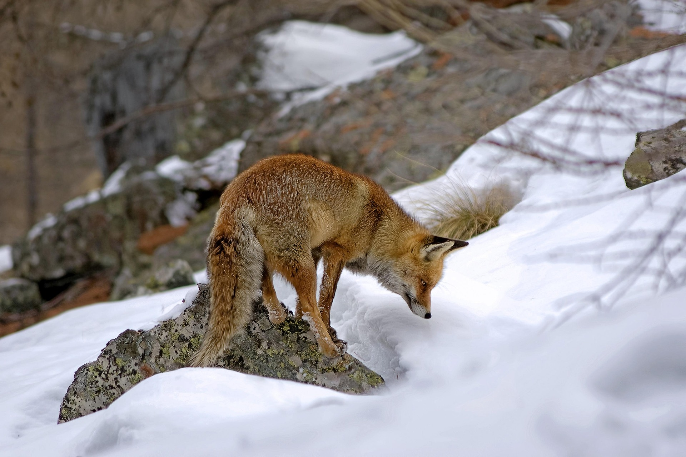

Лисиця — типовий всеїдний хижак. Основу раціону складають дрібні ссавці, але вона також споживає птахів, комах, фрукти та падаль.
Лисиця полює переважно вночі або в сутінках. Вона використовує гострий слух і нюх. Характерний спосіб — «мишкування»: лисиця стрибає високо вгору і падає на жертву передніми лапами.
Лисиці можуть запам’ятовувати місця, де заховали надлишки їжі (схованки), і знаходити їх навіть через кілька місяців.